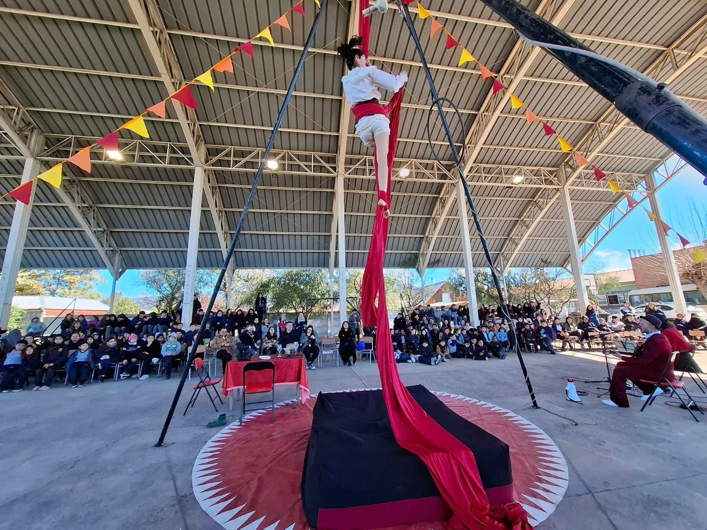

Agrupación Pacari Circo Social

Punto de Cultura Comunitaria · Pichilemu
Organización cultural comunitaria dedicada al circo social como herramienta de inclusión, participación y desarrollo personal, impulsando talleres y procesos formativos dirigidos a niños, jóvenes y adultos, promoviendo habilidades artísticas, trabajo en equipo y vinculación comunitaria en la comuna de Pichilemu.
Plan de Fortalecimiento 2026
«Plan de Fortalecimiento Agrupación Pacari Circo Social»
El plan busca fortalecer la sostenibilidad y gestión interna de Pacari Circo Social mediante la consolidación de roles organizativos, procesos formativos en circo social y la mejora de sus implementos de trabajo comunitario. Asimismo, contempla talleres gratuitos y jornadas culturales participativas orientadas a fortalecer la participación vecinal y la articulación con comunidades y organizaciones del territorio.
Proyectos y noticias
Fuente: Presentación del hito de firma de convenios de los Planes de Fortalecimiento de Puntos de Cultura Comunitaria 2026, región de O’Higgins. Ficha en construcción: la información y las fotografías se completarán con la organización.